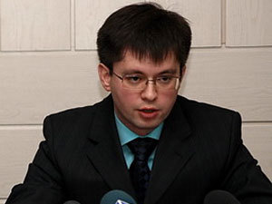

Удивительно но самый кажется прогрессивный (в хорошем смысле этого слова) заместитель губернатора Кузбасса Дмитрий Исламов пригласил-таки кемеровских блоггеров на чашку чая.

Само приглашение здесь
Так называемые кемеровские блоггеры, в основном, вовсе не блоггеры. Просто слово красивое и вроде как с интернетом связано. Вроде как электронный срез современного общества. Но сути дела это не меняет. Шанс конечно нечастый и от такого предложения, по-моему, не отказываются.
Записался первым, спасибо за подсказку мониторящему кемеровский интернет Араделу.